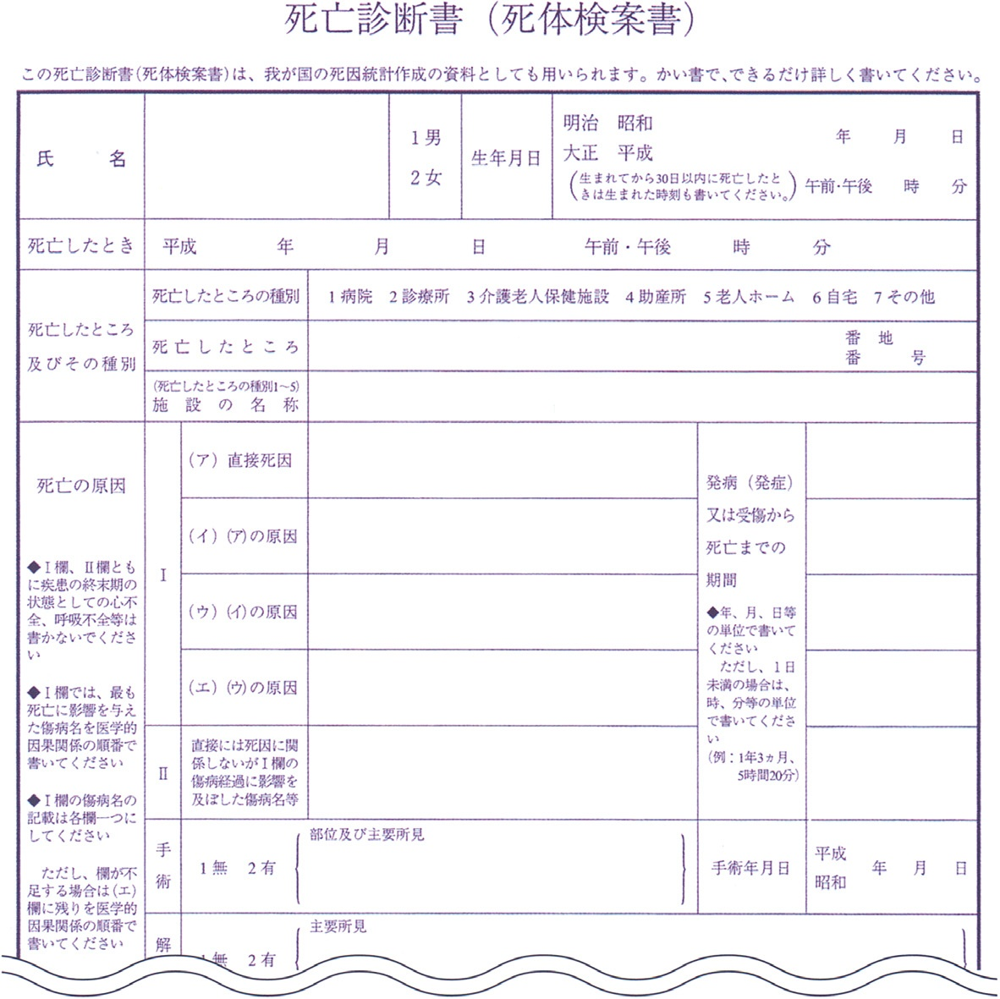
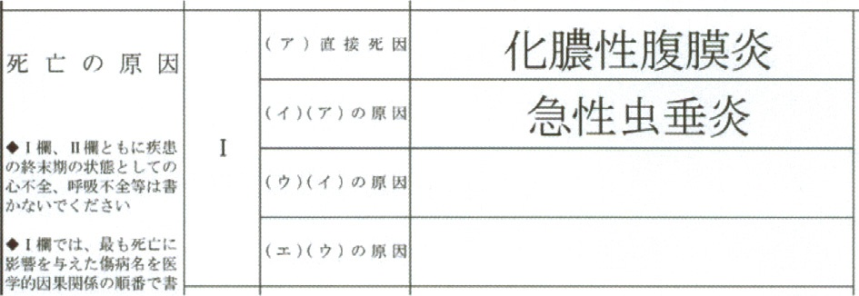
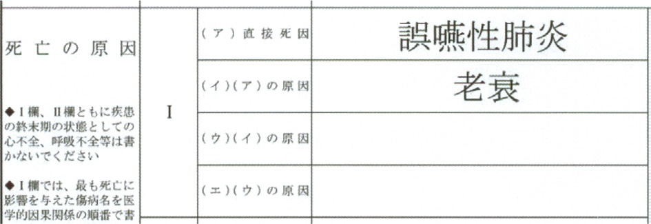
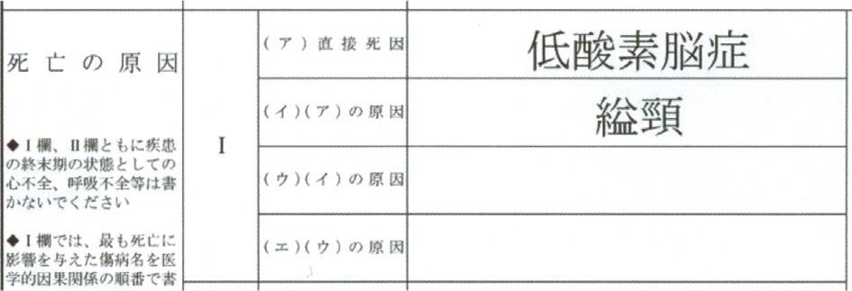
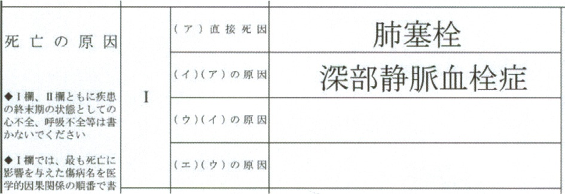
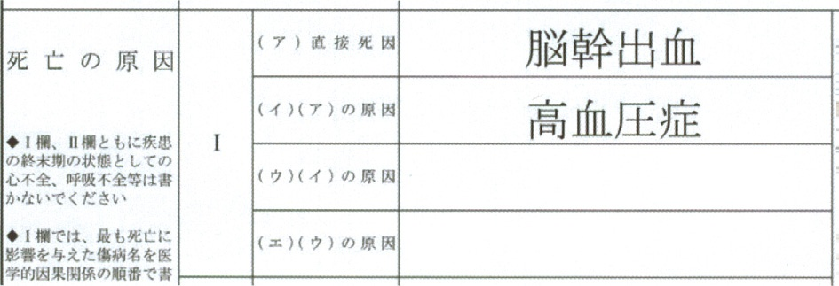
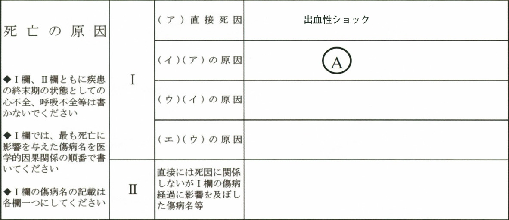
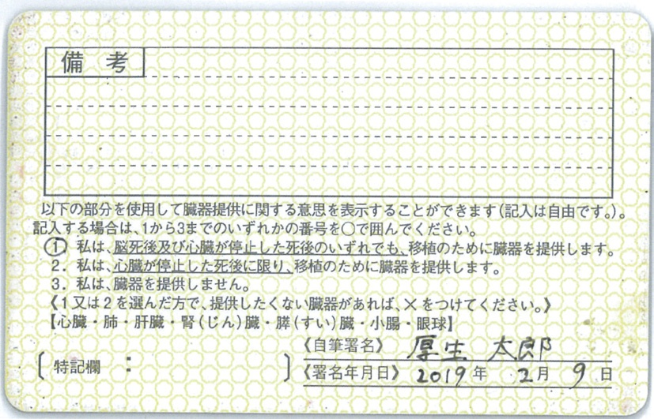
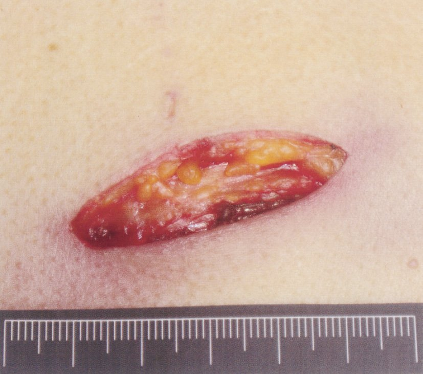
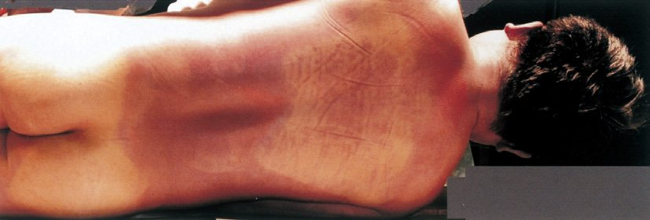

| 選択肢 | 解説 |
|---|---|
| ａ 喉頭癌による気道閉塞 | 病死及び自然死。腫瘍そのものが増大して気道を塞いだ結果の窒息で、体の外から加わった力は1つも無い。「窒息」という語に引かれて外因死を選ばないこと——窒息は死に至る機序であって、死因の種類ではない。 |
| ｂ 脳梗塞後の誤嚥性肺炎 | 病死及び自然死。脳梗塞という内因性疾患の後遺症（嚥下障害）が招いた肺炎で、一連の経過はすべて体の中で完結している。 |
| ◯ ｃ 餅を喉に詰まらせた窒息 | ◯ 不慮の外因死。体外の異物（餅）が気道を塞いだ＝外から加わった原因による死で、死因の種類は「6 窒息」（不慮の外因死）になる。故意ではないので自殺・他殺ではなく「不慮」である。 |
| ｄ 肝臓癌破裂による汎発性腹膜炎 | 病死及び自然死。「破裂」という語が外傷を連想させるが、腫瘍が自壊して破れたもので外力は加わっていない。 |
| ｅ 出血性胃潰瘍による出血性ショック | 病死及び自然死。潰瘍という疾患による出血であり、刺創・切創のような外因による出血ではない。 |
| 内因死（病死） | 外因死 | |
|---|---|---|
| 異状死か | 診断が確実なら異状死ではない | 常に異状死 |
| 警察への届出 | 不要 | 医師法21条により24時間以内に所轄警察署へ |
| 交付する書類 | 診療継続中の疾患による死なら死亡診断書 | 原則 死体検案書 |
| 選択肢 | 解説 |
|---|---|
| ａ 家族には病死であると説明する。 | 虚偽の説明であり許されない。消毒薬の血管内注入という医療行為に起因する死亡で、病死ではない。説明義務を果たさないばかりか、後に事実が判明したときに信頼を根底から損なう。 |
| ｂ すぐに点滴を抜去して処分する。 | 証拠の隠滅にあたる。点滴ルート・注射器・薬剤の空容器はいずれも死因究明の物証であり、現場と物品はそのまま保存するのが原則である。 |
| ◯ ｃ 24 時間以内に異状死の届出をする。 | ◯ 医師法21条に基づく対応。「診療行為に関連した予期しない死亡」は異状死であり（日本法医学会・異状死ガイドライン③）、検案して異状があると認めたときは24時間以内に所轄警察署に届け出なければならない。 |
| ｄ 心不全と記載した死亡診断書を発行する。 | 二重に誤り。①診療していた疾患（大腿骨頸部骨折）と関係ない原因による死亡なので死亡診断書ではなく死体検案書、②「心不全」は死に至る過程の状態であってⅠ欄に書いてはならない。 |
| ｅ 看護師には事実を話さないよう口止めする。 | 口止めは事実の隠蔽で、医療安全の観点からも最も避けるべき対応である。報告した看護師を守るのは、事実を隠すことではなく、個人ではなくシステムの問題として検証する体制をつくることである。 |
| 選択肢 | 解説 |
|---|---|
| ａ ① | 脳死判定基準の第1項目「深昏睡」。JCSⅢ-300 かつ GCS 3 であることを確認する。 |
| ｂ ② | 第2項目「自発呼吸の消失」。無呼吸テスト（人工呼吸器を外してPaCO2が上昇しても自発呼吸が出ないことの確認）で判定する。最も侵襲的なので判定の最後に行う。 |
| ｃ ③ | 第3項目「瞳孔固定」。左右とも直径4mm以上で固定していることを確認する。 |
| ◯ ｄ ④ | ◯ 膝蓋腱反射は脊髄反射であり、脳幹反射ではない。脳死は「脳幹を含む全脳の機能が不可逆的に停止した状態」だが、脊髄は生きているので深部腱反射やLazarus徴候などの脊髄反射はむしろ残りうる。したがって膝蓋腱反射の有無は判定基準に一切含まれない——この症例では消失しているが、それは判定の根拠にならない。 |
| ｅ ⑤ | 第5項目「平坦脳波」。最高感度で30分以上にわたり平坦であることを確認する。可能であれば聴性脳幹反応〈ABR〉の消失も併せて確認する。 |
| 反射 | 反射中枢 |
|---|---|
| 対光反射 | 中脳 |
| 角膜反射 | 橋 |
| 毛様脊髄反射 | 頸髄〜脳幹（交感神経路） |
| 眼球頭反射（人形の目現象） | 橋・延髄 |
| 前庭反射（冷水カロリック） | 橋・延髄 |
| 咽頭反射・咳反射 | 延髄 |
| 膝蓋腱反射 | 腰髄（L2-L4）＝脊髄反射なので対象外 |
| 臓器 | 脳死後 | 心臓死後 | 生体 |
|---|---|---|---|
| 心臓 | 〇 | × | × |
| 肺 | 〇 | × | 〇 |
| 肝臓 | 〇 | × | 〇 |
| 小腸 | 〇 | × | 〇 |
| 腎臓 | 〇 | 〇 | 〇 |
| 膵臓 | 〇 | 〇 | 〇 |
| 角膜（眼球） | 〇 | 〇 | × |
| 選択肢 | 解説 |
|---|---|
| ａ 肺 | 脳死後（および生体）でしか提供できない。肺は虚血に極めて弱く、心停止後は移植に耐えない。 |
| ◯ ｂ 角 膜 | ◯ 心臓死後にも提供できる。角膜は血管を持たず房水から栄養を受ける組織なので虚血に強く、心停止後でも提供できる。臓器移植法上の「臓器」には内臓のほかに眼球が含まれる点も押さえたい。なお角膜は生体からは提供できない。 |
| ｃ 肝 臓 | 脳死後または生体から提供する。肝は再生能が高いため生体部分肝移植が可能だが、心停止後の提供はできない。 |
| ｄ 小 腸 | 脳死後または生体から提供する。粘膜が虚血に弱く、心停止後は提供できない。 |
| ｅ 心 臓 | 脳死後でしか提供できない。心臓は生体移植も不可能で、脳死下でのみ提供される代表的な臓器である。 |
| 選択肢 | 解説 |
|---|---|
| ａ 解剖所見は記載できない。 | 記載できる。死亡診断書（死体検案書）には「解剖の主要所見」を書く欄がある。病理解剖を行った場合、その所見に基づいて死因をより正確に記載することが求められる——解剖の結果を反映させないなら解剖の意味が半減する。 |
| ｂ 歯科医師は発行できない。 | 歯科医師も死亡診断書を交付できる。歯科医師法第19条・第20条は医師法とほぼ同じ規定を置いており、自ら診察した患者について死亡診断書を交付できる。ただし「死体検案書」は医師にしか作成できない——歯科医師が作れるのは死亡診断書だけという非対称がそのまま出題点になる。 |
| ｃ 主治医以外は記載できない。 | 主治医以外でも作成できる。要件は「主治医であること」ではなく「自ら診察（または検案）したこと」である。逆に、自ら診察していない医師は主治医であっても作成できない（NO.104）。 |
| ◯ ｄ 医師が署名しなければならない。 | ◯ 作成した医師（歯科医師）本人の署名が必要である。死亡診断書は死亡を医学的・法律的に証明する公文書であり、誰が責任をもって死因を判断したのかを明示しなければならない。なお押印は令和2年の見直しで不要になった（NO.105 c と対）。 |
| ｅ 保健所に届け出なければならない。 | 医師が届け出るのではない。作成した死亡診断書は遺族に渡し、遺族が死亡届とともに市区町村役場（戸籍の窓口）へ提出する。「保健所に届け出る」は NO.110 の誤り肢そのもの——保健所が関与するのは、市町村が受理した人口動態調査票を審査する段階である。 |
| 死亡診断書 | 死体検案書 | |
|---|---|---|
| 医師 | 〇 | 〇 |
| 歯科医師 | 〇 | ×（医師のみ） |
| 主治医以外の医師 | 〇（自ら診察していれば） | 〇（自ら検案していれば） |
| 自ら診察・検案していない医師 | × | × |
| 選択肢 | 解説 |
|---|---|
| ａ 稀な疾患の治療法を相談する。 | CPCは「亡くなった後」に行う振り返りの会であり、これから行う治療の相談ではない。生存中の症例の治療方針を練るのはキャンサーボードや症例検討会の役割である。 |
| ｂ 入院中の診断困難症例を相談する。 | 同じ理由で誤り。CPCの対象は病理解剖を行った死亡症例で、入院中（生存中）の症例は扱わない。 |
| ｃ 医療行為と医療事故の因果関係を評価する。 | これは医療事故調査（医療事故調査・支援センターと院内調査委員会）の仕事。CPCの目的は責任の追及ではなく、臨床診断と病理所見を突き合わせて学ぶことである。目的が「学習」か「責任評価」かが、この2つの決定的な違い。 |
| ｄ 術前検査の結果から手術の術式を検討する。 | 術前カンファレンスの内容で、CPCとは無関係。 |
| ◯ ｅ 臨床経過と病理解剖の所見を比較検討する。 | ◯ CPCの定義そのもの。院内の病理医が解剖を実施し、解剖の模様・結果・作成した病理標本を提示して、生前の臨床経過と比較検討する。診療に関わった医師だけでなく研修医など院内のさまざまな医師が参加して学ぶ場で、臨床研修における必須の学習項目の1つとされている。 |
| 会・制度 | 目的 | 根拠・主体 |
|---|---|---|
| CPC（臨床病理検討会） | 臨床経過と病理解剖所見の比較検討＝教育と検証 | 院内（病理医が主導） |
| 医療事故調査 | 医療に起因し管理者が予期しなかった死亡の原因究明と再発防止 | 医療法／医療事故調査・支援センターへ報告し院内調査 |
| M&M カンファレンス | 合併症・死亡例の振り返りと診療の質改善 | 院内（診療科） |
| キャンサーボード | 生存中の癌患者の集学的治療方針の決定 | 院内（多職種） |
| 選択肢 | 解説 |
|---|---|
| ａ 頭蓋内の燃焼血腫 | 死後でも生じる。燃焼血腫（熱血腫）は、高温で頭蓋骨の板間静脈から血液が滲出して硬膜外に貯まったもので、生きていたかどうかとは無関係に、遺体が強く焼かれれば形成される。外傷性の硬膜外血腫と紛らわしいが生活反応ではない。 |
| ｂ 頸部皮膚のⅢ度熱傷 | Ⅲ度熱傷は生活反応ではない。Ⅲ度は皮膚全層が凝固壊死した状態で、死体を焼いても同じ所見になる。生活反応になるのはⅡ度熱傷（水疱形成）——水疱は生きている組織の炎症反応（血漿の滲出）であり、死体には生じない。この対比がそのまま出題点である。 |
| ◯ ｃ 気管内の煤付着 | ◯ 代表的な生活反応。火災の煙に含まれる煤が気管・気管支の内腔に付着しているということは、火災の最中に呼吸をしていた＝生きていたことを意味する。死体には呼吸が無いので、煤は口や鼻の外側に付くだけで気道深部までは入らない。血中一酸化炭素ヘモグロビン〈CO-Hb〉の上昇も同じ意味を持つ所見である。 |
| ｄ 肘関節屈筋の熱収縮 | 死後でも生じる。高温で筋蛋白が変性・収縮し、屈筋群が優位なため四肢が屈曲位をとる（闘士型姿勢・ボクサー姿勢）。「もがいた跡」に見えるが生活反応ではなく、死後に焼かれた遺体でも同じ姿勢になる。 |
| ｅ 背部の死斑 | 死斑は死後に必ず生じる死体現象であり、火災の前に生きていたかどうかを何も語らない。ただし死斑が鮮紅色であればCO中毒を示唆し、火災時に生存して煙を吸っていた証拠になる——「死斑がある」ではなく「死斑が鮮紅色である」なら生活反応。 |
| 状況 | 生活反応（生存の証拠） | 死後でも生じる（証拠にならない） |
|---|---|---|
| 火災 | 気管内の煤・Ⅱ度熱傷（水疱）・鮮紅色の死斑・CO-Hb上昇 | Ⅲ度熱傷・熱収縮・燃焼血腫 |
| 創傷 | 創縁の腫脹・出血・凝血・炎症細胞浸潤 | 死後の切創（乾いて出血がない） |
| 溺水 | 気道内の微細泡沫・プランクトン（珪藻）の全身臓器への到達 | 口腔内の水 |
| 縊頸・絞頸 | 索条痕部の皮下出血・眼瞼結膜の溢血点 | 死後に縄をかけた圧痕 |
| 死体現象 | 時間経過 |
|---|---|
| 死斑 | 死後2〜3時間で出現開始 → 12時間で固定（移動しなくなる） |
| 死後硬直 | 死後2〜3時間で出現開始 → 12時間で最強 |
| 直腸温 | 37℃から1時間ごとに約1℃低下 |
| 角膜混濁 | 早期から始まり 48時間で完全に混濁 |
| 腐敗（後期死体現象） | 48時間くらいで腹壁の緑色変化 |
| 選択肢 | 解説 |
|---|---|
| ａ 1 時間以内 | 早すぎる。死斑も死後硬直も出現するのは死後2〜3時間からなので、両方がはっきり認められる時点で1時間以内は否定される。直腸温の低下（37→32℃）も1時間では説明できない。 |
| ◯ ｂ 6 ～12 時間 | ◯ 3つの所見が矛盾なく収まる唯一の帯。①直腸温32℃＝37℃から1時間に約1℃低下するので約5時間 ②死斑・死後硬直が四肢まで及ぶ（出現開始2〜3時間、最強・固定は12時間）③角膜混濁がまだ無い（完全混濁は48時間）。最も精度の高い体温から5時間前後と読み、それを含む帯を選ぶ。 |
| ｃ 24 ～30 時間 | 遅すぎる。この頃には直腸温は外気温（20℃）まで下がりきっており、角膜混濁も明らかになっている。32℃という体温が残っていること自体が24時間を否定する。 |
| ｄ 36 ～42 時間 | 同じ理由で否定される。死後硬直はこの頃から緩解し始めるので、四肢まで硬直が保たれている所見とも合わない。 |
| ｅ 48 時間以上 | 否定される。48時間では角膜は完全に混濁し、腹壁の緑色変化（腐敗＝後期死体現象）が現れ始める。硬直も解けている。 |

| 選択肢 | 解説 |
|---|---|
| ａ 糖尿病 | ステロイド治療の合併症として生じた病態で、感染しやすくした背景ではあるが直接死因ではない。Ⅰ欄の因果の鎖に無理なく入らないものはⅡ欄（直接には死因に関係しないがⅠ欄の傷病経過に影響を及ぼした傷病名等）に書く。 |
| ｂ 細菌性肺炎 | 敗血症性ショックの1つ前の原因＝（イ）に入る。死につながる順序としては正しいが「直接」ではない。 |
| ｃ ネフローゼ症候群 | SLEに併発した病態で、より上流（ウ）に位置する。Ⅰ欄は上から下へ遡るので、ネフローゼ症候群を（ア）に書くと因果が逆転する。 |
| ◯ ｄ 敗血症性ショック | ◯ 死に最も近い病態＝直接死因。Ⅰ欄の（ア）には「死亡に最も近い」ものを書くのが原則で、この症例では SLE → ネフローゼ症候群／ステロイド治療 → 糖尿病・細菌性肺炎 → 敗血症性ショック → 死という流れの最下流に当たる。 |
| ｅ 全身性エリテマトーデス〈SLE〉 | この症例の原死因＝Ⅰ欄の一番下に書くもの。死因統計に使われるのは原死因のほうなので重要な項目だが、設問が聞いているのは（ア）直接死因なので誤り。 |
| 直接死因 | 原死因 | |
|---|---|---|
| 位置 | Ⅰ欄の一番上（ア） | Ⅰ欄の一番下 |
| 意味 | 死に最も近い病態 | 一連の事象の引き金になった疾病・損傷 |
| 本症例 | 敗血症性ショック | 全身性エリテマトーデス〈SLE〉 |
| 死因統計 | 使わない | こちらを使う（人口動態統計の死因） |
| 死亡の場所 | （ア） | （イ） | （ウ） | （エ） | （オ） | その他 |
|---|---|---|---|---|---|---|
| 割合（％） | 74.6 | 12.7 | 6.3 | 2.3 | 2.0 | 2.1 |
| 順位 | 場所 | 割合 |
|---|---|---|
| 1（ア） | 病院 | 74.6％ |
| 2（イ） | 自宅 | 12.7％ |
| 3（ウ） | 老人ホーム | 6.3％ |
| 4（エ） | 診療所 | 2.3％ |
| 5（オ） | 介護老人保健施設 | 2.0％ |
| — | その他 | 2.1％ |
| 選択肢 | 解説 |
|---|---|
| ◯ ａ 自 宅 | ◯ 12.7％で第2位。戦後まもなくは8割以上が自宅で亡くなっていたが、1976年に病院死が自宅死を上回り、以後長く低下を続けた。近年は在宅医療と在宅看取りの推進により再び上昇に転じているのが押さえどころ。 |
| ｂ 病 院 | 74.6％で第1位＝（ア）。「日本人の4人に3人は病院で死ぬ」が長く続いた状況で、割合は2005年頃の8割強をピークにゆるやかに低下している。 |
| ｃ 診療所 | 2.3％で第4位＝（エ）。有床診療所の減少に伴い割合も減っている。 |
| ｄ 老人ホーム | 6.3％で第3位＝（ウ）。特別養護老人ホーム・有料老人ホームなどでの看取りが増え、割合は年々上昇している。 |
| ｅ 介護老人保健施設 | 2.0％で第5位＝（オ）。老健は在宅復帰を目指す中間施設なので、生活の場である老人ホームより看取りの数は少ない。 |
| 選択肢 | 解説 |
|---|---|
| ａ 不明熱の患者が、入院5 日目に原因不明のショック状態となり死亡した。 | 死亡診断書。不明熱の精査という診療を継続中で、その診療対象の病態が悪化して死亡している。「原因不明」という語に引かれて異状死＝検案書と飛びつかないこと——診療継続中の患者が診療していた傷病の経過で死亡すれば死亡診断書である。 |
| ｂ 予定されていた肝切除術を受けた患者が、多臓器不全となり術後5 日目に死亡した。 | 死亡診断書。予定手術後の多臓器不全は、診療していた疾患とその治療の経過として説明がつく。術後死＝ただちに異状死ではない——「予期しない」死であれば別だが、本肢にはそれをうかがわせる記載が無い。 |
| ｃ 末期がん患者が、在宅医の診察75 時間後に心停止となり同医師が訪問して死亡を確認した。 | 死亡診断書。「診療継続中」に何時間という決まりは無い——24時間を超えていても、診療していた疾患（末期がん）による死亡であることが死後の診察で確認できれば死亡診断書を交付できる。この「75時間」は24時間ルールを誤って覚えていると引っかかる罠。 |
| ｄ 外食中に意識を失って救急車で搬入され、くも膜下出血と診断された患者が、20 時間後に死亡した。 | 死亡診断書。搬入後に診療を開始し、その診療していた疾患（くも膜下出血）で死亡している。くも膜下出血は内因性疾患であり、外食中の発症であっても外因死ではない。 |
| ◯ ｅ うつ病で通院中の患者が、診察6 時間後に溺水状態で同病院に救急車で搬入され主治医が死亡を確認した。 | ◯ 死体検案書。診療継続中の患者ではあるが、死因は溺水＝診療していた疾患（うつ病）とは別の原因である。「診療継続中の患者であるが、診療していた疾患と関係ない理由で死亡した場合」＝死体検案書。加えて溺水は外因死なので異状死にも当たり、24時間以内に所轄警察署へ届け出る。 |
| 条文・場面 | 24時間の意味 |
|---|---|
| 医師法21条 | 異状を認めたら24時間以内に所轄警察署へ届け出る |
| 医師法20条 ただし書き | 診療中の患者が受診後24時間以内に死亡した場合は、改めて診察しなくても死亡診断書を交付できる |
| よくある誤解 | 「24時間を超えたら死亡診断書は書けない」「24時間以内なら死体検案は不要」——どちらも誤り |
| 選択肢 | 解説 |
|---|---|
| ◯ ａ 老 衰 | ◯ 高齢者で他に記載すべき死因が無い自然死は「老衰」と書いてよい。死亡診断書記入マニュアルは「老衰」を高齢者で他に記載すべき死亡の原因がない、いわゆる自然死の場合に用いると定めている。本例は98歳、外傷なし、経過は数か月かけた摂食低下・るいそう・意識低下という緩徐な衰弱で、他に特定できる疾患が無い。 |
| ｂ 心不全 | Ⅰ欄に書いてはならない代表格。死亡診断書の用紙にも「Ⅰ欄、Ⅱ欄ともに疾患の終末期の状態としての心不全、呼吸不全等は書かないでください」と明記されている。これは「どう死んだか」であって「何で死んだか」ではない。 |
| ｃ 脳梗塞 | 5年前の既往で、今回の死に直結していない。脳梗塞の後遺症（寝たきり）が衰弱の背景にはあるが、直接死因として記載する根拠に乏しい。書くとすればⅡ欄の候補である。 |
| ｄ 呼吸不全 | b と同じ理由で不可。終末期の状態を書くと、原死因を集計する死因統計が意味をなさなくなる。 |
| ｅ 不詳の死 | 欄の取り違え。「不詳の死」は死因の種類欄（12分類の12番）の選択肢であって、死亡の原因欄に書く語ではない。しかも本例は経過も所見も老衰として矛盾がなく、死因の種類は「1 病死及び自然死」である。 |





| （ア）直接死因 | （イ）原死因 | 死因の種類 | |
|---|---|---|---|
| A | 化膿性腹膜炎 | 急性虫垂炎 | 病死 |
| B | 誤嚥性肺炎 | 老衰 | 病死 |
| C | 低酸素脳症 | 縊頸 | 外因死（自殺／他殺） |
| D | 肺塞栓 | 深部静脈血栓症 | 病死 |
| E | 脳幹出血 | 高血圧症 | 病死 |
| 選択肢 | 解説 |
|---|---|
| ａ A | （ア）化膿性腹膜炎 ←（イ）急性虫垂炎＝病死。虫垂炎が穿孔して腹膜炎に至る、すべて体の中で完結した内因性の経過である。 |
| ｂ B | （ア）誤嚥性肺炎 ←（イ）老衰＝病死。誤嚥は嚥下機能の低下という体内の変化によるもので、外から異物を詰め込まれたわけではない。NO.81 の b と同じ論点。 |
| ◯ ｃ C | ◯（ア）低酸素脳症 ←（イ）縊頸＝外因死。縊頸は首に索状物をかけて自らの体重で頸部を圧迫するもので、体の外から加わった力による死である。死因の種類は通常「9 自殺」（他為であれば「10 他殺」）で、いずれにせよ外因死なので異状死＝警察への届出が必要になる。 |
| ｄ D | （ア）肺塞栓 ←（イ）深部静脈血栓症＝病死。「塞栓」「血栓」は外傷を連想させるが、血管内で自然に形成された血栓による内因性の病態である。ただし骨折や手術が引き金であればその傷病がⅠ欄のさらに下に来て外因死になりうる——本図にはその記載が無い。 |
| ｅ E | （ア）脳幹出血 ←（イ）高血圧症＝病死。高血圧症を原死因とする典型的な内因死である。 |
| 根拠法 | 遺族の承諾 | |
|---|---|---|
| 司法解剖（犯罪に関与していそう） | 刑事訴訟法 | 不要 |
| 行政解剖（承諾解剖）（犯罪性は無さそう） | 死体解剖保存法 | 必要（監察医が実施する場合は不要） |
| 新法解剖（犯罪性は無さそう） | 死因・身元調査法 | 不要 |
| 選択肢 | 解説 |
|---|---|
| ａ 行政解剖を行う。 | 対象が違う。行政解剖は犯罪性が無さそうな異状死体について死因を明らかにするために行うもので、監察医制度のある地域（東京23区・大阪市・神戸市など）では監察医が遺族の承諾なしに実施できる。本例は異状死ではない。 |
| ｂ 系統解剖を行う。 | 目的が違う。系統解剖は医学部・歯学部の学生が実習で行う完全な教育目的の解剖（いわゆる献体）で、死因の特定は目的ではない。生前に本人が献体を登録している必要がある。 |
| ｃ 司法解剖を行う。 | 犯罪に関与している疑いがある死体について、刑事訴訟法に基づき裁判官の発する鑑定処分許可状により行う。本例に犯罪性を疑わせる所見は無い。なお司法解剖は遺族の承諾を要しない（NO.101 b）。 |
| ◯ ｄ 病理解剖を行う。 | ◯ 本例に適合する唯一の解剖。病理解剖は院内で行われ、死因の特定に加えて生前の診断・治療の妥当性を確認することを目的とする。死体解剖保存法に基づき遺族の承諾を得て実施するので、家族が希望している本例では要件を満たす。 |
| ｅ 解剖を実施しない。 | 家族が希望しており、実施できる要件も揃っている。死因が推定できているからといって解剖の意義が無いわけではなく、病変の広がりや治療効果の確認、家族の納得（グリーフケア）にもつながる。 |
| 選択肢 | 解説 |
|---|---|
| ａ 清掃の指示 | 現場を保存すべき段階で、最も避けるべき対応。床の血液の量・広がり、チューブが外れた位置は出血量と経過時間を推定する材料であり、清掃はこれを消してしまう。 |
| ◯ ｂ 異状死の届出 | ◯ 医師法21条に基づき24時間以内に所轄警察署へ届け出る。肺炎は治癒しており、死亡は点滴チューブの離断による出血という診療していた疾患とは別の、しかも医療行為に関連した予期しない経過による。異状死ガイドラインの③（診療行為に関連した予期しない死亡）に当たる。 |
| ｃ 保健所へ連絡 | 届出先が違う。医師法21条の届出先は所轄警察署である。保健所は死亡診断書・死体検案書の届出先でもない（NO.85 e・NO.110 c と同じ誤り）。 |
| ｄ 病理解剖の依頼 | 順序が違う。異状死体は警察へ届け出たうえで、司法解剖・新法解剖など警察の判断に基づく解剖の対象となりうる。院内で遺族の承諾を得て行う病理解剖に先に進むと、死因究明のための捜査を妨げることになる。 |
| ｅ 死亡診断書の記載 | そもそも交付するのは死体検案書（診療していた疾患＝肺炎とは別の原因による死亡）。加えて、異状死体は届出を先に行う——警察の検視・調査を経て死因が判断されるまで書類は確定できない。 |
| 本人の意思 | 家族の意思 | 提供の可否 |
|---|---|---|
| 提供したい | 承諾する | 〇 |
| 提供したい | 拒否する | × |
| 不明 | 承諾する | 〇（平成21年改正） |
| 提供したくない | いずれでも | × |
| 選択肢 | 解説 |
|---|---|
| ａ 個人番号カードの意思表示 | 有効な意思表示の1つ。マイナンバー（個人番号）カードの裏面には臓器提供の意思表示欄がある。 |
| ｂ 運転免許証の意思表示 | 有効な意思表示の1つ。運転免許証の裏面には「1 脳死後及び心臓が停止した死後のいずれでも提供する／2 心臓が停止した死後に限り提供する／3 提供しません」の記載欄がある（NO.102 の写真）。 |
| ｃ 健康保険証の意思表示 | 有効な意思表示の1つ。健康保険証の裏面にも臓器提供意思表示欄がある。このほか臓器提供意思表示カードや日本臓器移植ネットワークの意思登録サイトでの登録も有効。 |
| ◯ ｄ 医師の承諾 | ◯ 臓器提供の根拠にならない。臓器提供の可否を決めるのは本人の意思と家族の承諾の2つだけで、主治医や脳死判定医の判断が根拠になることはない。むしろ法的脳死判定は臓器移植に関わらない医師2人以上が行うと定められており、医師が提供の是非に踏み込まない仕組みになっている。 |
| ｅ 家族の承諾 | 有効な根拠。平成21年（2009年）の臓器移植法改正により、本人の意思が不明でも、本人が拒否していなければ家族の承諾だけで提供できるようになった。本例は「口頭による拒否の意思表示はなかった」とわざわざ書かれており、この改正点を問うている。 |
| 改正前 | 改正後（現行） | |
|---|---|---|
| 本人の意思 | 書面による提供の意思表示が必須 | 不明でもよい（拒否していなければ） |
| 家族 | 承諾が必要 | 承諾が必要 |
| 年齢 | 15歳以上に限る | 年齢制限なし（15歳未満も可） |
| 親族への優先提供 | × | 意思表示により可能 |
| 選択肢 | 解説 |
|---|---|
| ａ 術中の大量出血による死亡 | 医療関連死に含まれる。手術という医療行為の最中に起きた予期しない出血による死亡で、医療に起因する死である。 |
| ｂ 輸液ポンプの誤用による死亡 | 医療関連死に含まれる。医療機器の操作の誤りに起因する死亡で、典型的な医療事故である。 |
| ｃ 負荷心電図検査中の心室細動による死亡 | 医療関連死に含まれる。検査という医療行為が引き金となった死亡で、治療だけでなく検査も「医療」に含まれる点が問われている。 |
| ◯ ｄ 在宅療養中の肺がん終末期の肺炎による死亡 | ◯ 医療関連死に含まれない。肺がん終末期という病気の自然な経過として予期された死亡であり、医療行為が死を引き起こしたのではない。この場合は診療継続中の患者が診療していた疾患で死亡しているので、死亡診断書を交付して終わる。 |
| ｅ 入院中に発生した重度褥瘡に起因する敗血症による死亡 | 医療関連死に含まれる。入院中の療養管理（体位変換・除圧などのケア）に関連して生じた合併症による死亡で、「管理」も医療に含まれる。 |
| 異状死の届出 | 医療事故調査制度 | |
|---|---|---|
| 根拠 | 医師法21条 | 医療法（平成27年10月〜） |
| 対象 | 検案して異状があると認めた死体 | 医療に起因し、管理者が予期しなかった死亡・死産 |
| 届出先 | 所轄警察署 | 医療事故調査・支援センター |
| 期限 | 24時間以内 | 遅滞なく（その後 院内調査を実施） |
| 目的 | 犯罪の捜査の端緒・死因究明 | 原因究明と再発防止（責任追及が目的ではない） |

| 欄 | 記載 |
|---|---|
| （ア）直接死因 | 出血性ショック |
| （イ）（ア）の原因 ＝ Ⓐ | 食道静脈瘤（破裂） |
| （ウ）（イ）の原因 | 肝硬変 |
| （エ）（ウ）の原因 | 慢性C型肝炎 ← 原死因 |
| Ⅱ欄 | 高血圧症・脂質異常症 |
| 選択肢 | 解説 |
|---|---|
| ａ 肝硬変 | 1つ下の（ウ）（イ）の原因に入る。食道静脈瘤を作った原因が門脈圧亢進＝肝硬変であり、Ⓐ（＝（イ））より上流に位置する。 |
| ｂ 高血圧症 | Ⅱ欄の候補。Ⅰ欄の因果の鎖（食道静脈瘤破裂 → 出血性ショック）には入らない。 |
| ｃ 脂質異常症 | 同じくⅡ欄の候補で、今回の死の連鎖には関与していない。 |
| ◯ ｄ 食道静脈瘤 | ◯ Ⓐは「（イ）（ア）の原因」の欄で、（ア）に印字された「出血性ショック」の直接の原因を書く。吐血し、内視鏡的食道静脈瘤結紮術を要したのだから、出血源は食道静脈瘤（破裂）である。 |
| ｅ 慢性C 型肝炎 | この症例の原死因＝Ⅰ欄の一番下（エ）に入る。死因統計に使われるのはこちらだが、Ⓐの位置は（イ）なので誤り。 |
| 選択肢 | 解説 |
|---|---|
| ａ 「ご遺体は火葬した後にお返しします」 | 誤り。病理解剖の後、遺体は縫合・清拭してそのまま遺族に返す。火葬は遺族が行うもので、病院が行うものではない。 |
| ◯ ｂ 「死因の究明が病理解剖の主な目的です」 | ◯ 病理解剖の目的の説明として正しい。病理解剖は死因の特定に加え、生前の診断・治療の妥当性を確認するために行う。本例は「原因不明の発熱」で精査中に死亡しており、まさに死因究明の意義が大きい症例である。 |
| ｃ 「摘出した臓器は病院で永久に保管します」 | 誤り。診断に必要な範囲で標本（パラフィンブロック・スライドガラス）や一部の臓器を保存することはあるが、「永久に保管する」と説明するのは適切でない。保存や教育・研究への利用については別に説明して同意を得る。 |
| ｄ 「ご遺体は病理解剖後1 か月間病院でお預かりします」 | 誤り。病理解剖は通常2〜3時間で終わり、同日中に遺体を遺族に返す。結果（最終報告）が出るまでには数週間〜数か月かかるが、それは遺体を預かる期間とは別である。 |
| ｅ 「病理解剖を行わないと死亡診断書が発行できません」 | 誤り であり、承諾を強いる不適切な説明。死亡診断書は診察に基づいて交付できる。病理解剖は遺族の任意の承諾に基づくもので、断っても不利益がないことを併せて伝える必要がある。 |
| 承諾 | 実施場所 | 遺体の返還 | |
|---|---|---|---|
| 病理解剖 | 遺族の承諾が必要 | 院内の病理解剖室 | 当日、遺族へ |
| 行政解剖 | 必要（監察医は不要） | 監察医務院など | 終了後、遺族へ |
| 司法解剖 | 不要（裁判官の令状） | 大学法医学教室など | 終了後、遺族へ |
| 選択肢 | 解説 |
|---|---|
| ａ 救急車を呼ぶ。 | 在宅看取りの方針が本人と家族の意向で確認されている。救急要請は「蘇生を望む」という意思表示になり、本人の意向に反する。しかも主治医が現場にいるので、死亡確認のために搬送する必要は無い。 |
| ｂ 警察に通報する。 | 異状死ではない。診療継続中の患者が、診療していた疾患（胃癌の終末期）の経過として死亡しており、身体所見にも不審な点が無い。在宅看取りで警察を呼ぶと遺族に不必要な負担を強いることになる。 |
| ｃ 心肺蘇生を行う。 | 本人と家族の意向に反する。加えて、瞳孔散大・対光反射消失を伴う心肺停止で、蘇生の適応も無い。 |
| ｄ 自家用車で病院に搬送する。 | 意味が無い。死亡確認も死亡診断書の交付も自宅で行える。 |
| ◯ ｅ 死亡確認し、死亡診断書を作成する。 | ◯ 在宅看取りの標準的な対応。主治医が診療を継続しており、診療していた疾患（胃癌）による死亡と判断でき、身体所見に不審な点が無い。死亡に立ち会っていなくても、死後の診察で不審な点がなければ死亡診断書を交付できる。 |
| 語 | 誰が | 何を | 根拠 |
|---|---|---|---|
| 検視 | 検察官・司法警察員（警察） | 犯罪性の有無を判断する法的手続 | 刑事訴訟法229条 |
| 検案 | 医師 | 死体を医学的に検査し死因・死後経過時間を判断する | 医師法（20条・21条） |
| 解剖 | 医師（法医・病理） | 体内を検査して死因を確定する | 刑事訴訟法／死体解剖保存法／死因身元調査法 |
| 選択肢 | 解説 |
|---|---|
| ａ 死体検案は警察が行う。 | 死体検案を行うのは医師である。警察が行うのは「検視」（刑事訴訟法229条。犯罪性の有無を判断するために検察官・司法警察員が行う手続）で、検案（医学的な検査）と検視（法的な手続）は別のもの。実務では検視に医師が立ち会い、医師が検案して死体検案書を作成する。 |
| ◯ ｂ 司法解剖には遺族の承諾は必要ない。 | ◯ 司法解剖は刑事訴訟法に基づく手続で、裁判官の発する鑑定処分許可状によって行われる。犯罪の捜査という公益のために行うものなので遺族の承諾を要しない——遺族が拒んでも実施される。 |
| ｃ 監察医が行う解剖には遺族の承諾が必須である。 | 監察医が行う場合は承諾が不要である。行政解剖は死体解剖保存法に基づき原則として遺族の承諾を要する（＝承諾解剖）が、監察医が実施する場合は例外として不要。この例外を知っているかを問う肢で、監察医制度があるのは東京23区・大阪市・神戸市などに限られる。 |
| ｄ 最終診察から24 時間以内であれば死体検案は必要ない。 | 24時間ルールの誤解。医師法20条ただし書きは「診療中の患者が受診後24時間以内に死亡した場合は、改めて診察しなくても死亡診断書を交付できる」という手続の緩和を定めたもので、診療していた疾患と関係ない死（突然死）にまで及ぶものではない。現在は「診療継続中の患者が診療に係る傷病で死亡したと認められる場合」に死後診察なしで交付できる、という解釈が示されている。 |
| ｅ 死体検案で異状が認められる場合の届出義務は医療法で規定されている。 | 根拠法が違う。異状死の届出義務は医師法第21条である。医師法＝人（医師）／医療法＝施設（医療機関）という第1章の軸がここでも効く——「医師が届け出る義務」は医師法に置かれる。 |

| 選択肢 | 解説 |
|---|---|
| ａ 法的脳死判定を行う。 | 順序が違う。法的脳死判定は「臓器提供をする」ことを前提に行う手続で、家族の承諾を得たうえで、臓器移植に関わらない2人以上の医師が行う。家族と相談する前に判定へ進むことはできない。 |
| ｂ 移植チームに連絡をする。 | 早すぎるうえ、連絡先も違う。レシピエントの選定と摘出・移植の調整は日本臓器移植ネットワークが行う。主治医が個別の移植施設へ連絡する仕組みにはなっていない。 |
| ｃ 組織適合抗原〈HLA〉を調べる。 | 提供が決まってからの手続。本人・家族の意思が確認できていない段階で移植のための検査を進めるのは順序が逆である。 |
| ◯ ｄ 家族と臓器提供について相談をする。 | ◯ まず行うべきは家族への選択肢の提示と相談。本人が書面で提供の意思を表示していても、家族の承諾がなければ提供はできない。家族は既に病院に到着しており、臓器提供という選択肢があることを伝えて意向を確認する段階である。この相談を経て家族が希望すれば、日本臓器移植ネットワークへ連絡してコーディネーターが説明を行う。 |
| ｅ 臓器移植ネットワークに連絡をする。 | 1つ後の段階。家族と相談し、家族が臓器提供を希望した時点で連絡する。「まず行うべき」を問われている本問では誤り——正答率77％と本章では低めなのは、この肢と d の順序で割れるからである。 |
| 選択肢 | 解説 |
|---|---|
| ａ 大腿静脈 | 中心静脈路の候補だが第一選択ではない。穿刺に時間がかかり、心肺蘇生中は血流が乏しく穿刺が難しい。また横隔膜より下の静脈から投与した薬物は心臓へ到達するのが遅れる。 |
| ｂ 内頸静脈 | 胸骨圧迫の術者と場所が競合する。頸部の穿刺は気道管理を行う位置と重なり、蘇生の手を止めることになる。 |
| ｃ 鎖骨下静脈 | 同じく胸骨圧迫の妨げになる。加えて胸骨圧迫による体幹の動きの中で穿刺すると気胸・動脈穿刺の危険が高い。 |
| ｄ 大伏在静脈 | 末梢静脈ではあるが第一選択ではない。足関節内果前方でのカットダウンの部位として知られるが、心臓から遠く、薬物の到達が遅れる。 |
| ◯ ｅ 肘正中皮静脈 | ◯ 心肺蘇生中の静脈路確保は末梢静脈が第一選択で、中でも太くて表在し、胸骨圧迫を中断せずに穿刺できる肘窩の静脈が選ばれる。JRC蘇生ガイドラインも「まず末梢静脈路を確保し、確保できなければ骨髄路を考慮する」としている。薬物投与後は生理食塩液20mLでフラッシュし、上肢を挙上して中心循環への到達を早める。 |
| 選択肢 | 解説 |
|---|---|
| ａ 死亡確認を行った内科病棟当直医 | 交付できる。主治医でなくても、自ら診察（死亡確認）を行っている。 |
| ｂ 救命処置を補助した外科病棟当直医 | 交付できる。救命処置に加わっている＝自ら患者を診察している。診療科は要件ではない。 |
| ◯ ｃ 電話で死亡報告を受けたかかりつけ医 | ◯ 交付できない。かかりつけ医は最終受診が1週間前で、今回の死亡に際して自ら診察も検案もしていない。要件は「主治医であること」ではなく「自ら診察（検案）したこと」なので、電話で報告を受けただけでは書類を作成できない。 |
| ｄ 救命処置を行った救命救急センターの指導医 | 交付できる。自ら救命処置＝診察を行っている。 |
| ｅ 救命処置を行った救命救急センターの研修医 | 交付できる。臨床研修中であっても医師免許を持つ医師であり、自ら診察していれば作成できる。「研修医だから書けない」という規定は無い（実務では指導医の確認を受けるが、法律上の要件ではない）。 |
| 論点 | 正しい理解 | 本章の該当問題 |
|---|---|---|
| 誰が届け出るか | 遺族が市区町村役場へ（7日以内） | NO.85 e・NO.110 c |
| 剖検所見 | 「解剖」欄に記載する | NO.85 a |
| 署名・押印 | 署名は必要／押印は不要 | NO.85 d |
| 誰が作成できるか | 自ら診察・検案した医師（主治医でなくてよい） | NO.104 |
| 老衰 | 高齢者で他に死因が無い自然死なら記載できる | NO.92 |
| 心不全・呼吸不全 | Ⅰ欄・Ⅱ欄ともに記載しない | NO.82 d・NO.92 b/d |
| 選択肢 | 解説 |
|---|---|
| ａ 病院が届け出る。 | 届け出るのは遺族である。医師が作成した死亡診断書は遺族に交付し、遺族が死亡届とともに市区町村役場（戸籍の窓口）へ提出する。戸籍法により死亡の事実を知った日から7日以内とされる。 |
| ｂ 剖検所見は記載しない。 | 記載する。死亡診断書には「解剖」の欄があり、解剖の主要所見を書く（NO.85 a と同じ論点）。 |
| ｃ 署名と押印とが必要である。 | 署名は必要だが、押印は不要。従来は「署名押印」または「記名押印」とされていたが、令和2年の押印見直しにより押印は不要となった。なお出題当時の規定でも「署名または記名押印」であり、「両方が必要」とする本肢は当時から誤りである。 |
| ｄ 主治医以外は記載できない。 | 主治医以外でも、自ら診察していれば作成できる（NO.104）。 |
| ◯ ｅ 死因として老衰と記載できる。 | ◯ 記載できる。死亡診断書記入マニュアルは「老衰」を高齢者で他に記載すべき死亡の原因がない、いわゆる自然死の場合に用いるとしている。禁じられているのは「心不全」「呼吸不全」など疾患の終末期の状態であって、老衰はこれに当たらない（NO.92）。 |

| 鋭器損傷 | 鈍器損傷（挫裂創） | |
|---|---|---|
| 創縁 | 滑らかで直線的 | 不整・挫滅・表皮剝脱を伴う |
| 創底 | 組織架橋がない | 組織架橋（血管・神経の橋渡し）がある |
| 凶器 | 刃物・ガラス片など | 棒・拳・転倒による打撲など |
| 選択肢 | 解説 |
|---|---|
| ａ 創を縫合する。 | 死亡が確認されており治療の意味は無く、創の性状という最も重要な物証を改変してしまう。創縁の性状（鋭利か挫滅しているか）、創角、深さ、方向は凶器の種類と受傷状況を推定する材料である。 |
| ◯ ｂ 警察署に届け出る。 | ◯ 医師法21条に基づき、24時間以内に所轄警察署へ届け出る。背部の創は鋭器による損傷を示唆し、自分では届きにくい部位でもあるため他殺（他為）の可能性がある。路上で発見された身元不明の心肺停止という状況も含め、外因死かつ死因が明らかでないもの＝異状死の典型である。 |
| ｃ 病理解剖を依頼する。 | 順序も種類も違う。犯罪性が疑われる死体は警察へ届け出たうえで司法解剖の対象となる。病理解剖は院内で遺族の承諾を得て行うもので、本例には適さない。 |
| ｄ 死亡診断書を交付する。 | 診療継続中の患者ではないので死亡診断書は交付できない。交付するのは死体検案書である。 |
| ｅ 死体検案書を交付する。 | 交付する書類としては正しいが、「まず行うべき」ではない。異状死体は届出が先で、警察の検視・調査を経て死因が判断されるまで書類は確定できない。「正しい書類」と「まず行うこと」を取り違えさせる肢である。 |
| 問題 | 状況 | 正解 |
|---|---|---|
| NO.82 | 消毒薬の誤注入 | 24時間以内に異状死の届出 |
| NO.95 | 点滴チューブが外れて出血 | 異状死の届出 |
| NO.106 | 路上の背部鋭器損傷 | 警察署に届け出る |
| NO.107 | 縊頸（遺書あり） | 索条痕と索状物の性状の一致を確認 |
| 選択肢 | 解説 |
|---|---|
| ａ 死亡診断書を作成する。 | 検案した医師が作成するのは死体検案書である。診療継続中の患者ではなく、しかも死因は診療していた疾患（糖尿病・慢性腎不全）と関係がない。 |
| ｂ かかりつけ医に死体検案書の発行を依頼する。 | かかりつけ医は今回の死体を自ら検案していないので作成できない（NO.104 と同じ論点）。臨場して検案した医師が自ら作成する。 |
| ◯ ｃ 索条痕がロープの性状と一致しているかを確認する。 | ◯ 検案の核心。頸部に残る索条痕の走行・幅・硬さ・皮下出血の有無が、現場のロープの太さや材質、かけ方と矛盾しないかを確認する。一致しなければ、他者が絞めてから吊るした（偽装自殺）可能性を検討しなければならない——遺書があっても、それだけで自殺と決めないのが検案の基本姿勢である。 |
| ｄ 作成書類の「死亡したとき」欄に死亡確認時刻を記載する。 | 「死亡したとき」欄には死亡した（と推定される）時刻を書く。発見時にすでに死亡している場合は、死体現象などから推定した時刻を記載し「（推定）」と付記する。死亡確認時刻をそのまま書くと、死亡時刻の統計も相続などの法律関係も誤ることになる。 |
| ｅ 作成書類の「死因の種類」欄は、死者の意向を尊重して病死とする。 | 死体検案書は事実を医学的に証明する公文書であり、死者や遺族の意向で内容を変えることはできない。死因の種類は「9 自殺」と記載する。虚偽の記載は虚偽診断書等作成罪（刑法160条）に当たる。 |
| 例 | 医療関連死 | 異状死 |
|---|---|---|
| 脂質異常症治療中の自殺 | × | 〇（外因死） |
| 造影剤によるアナフィラキシー死 | 〇 | 〇（診療行為に関連した予期しない死亡） |
| 終末期癌の予期された死 | × | × |
| 路上で発見された身元不明の死 | × | 〇（死因が明らかでない） |
| 選択肢 | 解説 |
|---|---|
| ◯ ａ 脂質異常症治療中の自殺 | ◯ 医療関連死に含まれない。脂質異常症の治療という医療行為と自殺という死因のあいだに因果関係が無い——「治療中に起きた死」であっても「治療による死」ではない。ただし自殺は外因死なので異状死には当たり、医師法21条の届出は必要——「医療関連死ではない」と「異状死ではない」は別である。 |
| ｂ 負荷心電図検査中の心室細動による死亡 | 医療関連死に含まれる。検査という医療行為が引き金となった死亡で、NO.97 の c とまったく同じ肢である。 |
| ｃ 入院食誤嚥後の急性呼吸不全による死亡 | 医療関連死に含まれる。食事の提供と食事介助は療養に関する管理に当たり、医療の範囲である。 |
| ｄ 造影剤投与後のアナフィラキシーショックによる死亡 | 医療関連死に含まれる。薬剤投与という医療行為に起因する予期しない死亡の典型。 |
| ｅ 脳梗塞後のリハビリテーション時の脳出血による死亡 | 医療関連死に含まれる。リハビリテーションも医療行為であり、その最中に起きた予期しない死亡である。 |
| NO.97（117F-6） | NO.108（111E-21） | |
|---|---|---|
| 正解 | 在宅療養中の肺がん終末期の肺炎による死亡 | 脂質異常症治療中の自殺 |
| 外し方 | 病気の予期された自然経過 | 医療と因果関係の無い外因死 |
| 共通の肢 | 負荷心電図検査中の心室細動による死亡（含まれる） | |
| 死斑・皮膚の色 | 示唆される死因 |
|---|---|
| 鮮紅色 | 一酸化炭素中毒（CO-Hb）／シアン中毒／低温環境（凍死） |
| 暗赤色〜暗紫色（通常） | 一般的な死（還元ヘモグロビン） |
| チョコレート色（褐色） | メトヘモグロビン血症（亜硝酸塩・アニリンなど） |
| 淡い・乏しい死斑 | 失血死（出血死では死斑が弱い） |
| 濃く強い死斑 | 窒息死・急死（うっ血する） |
| 選択肢 | 解説 |
|---|---|
| ａ 吐 血 | 消化管出血（胃潰瘍・食道静脈瘤・胃癌など）を示唆する。いずれも内因性疾患であり、むしろ病死を支持する所見である（NO.98 の症例がまさにこれ）。 |
| ｂ 尿失禁 | 死亡時に括約筋が弛緩すれば起こるもので、内因死でも外因死でも生じる非特異的な所見である。 |
| ｃ 瞳孔不同 | 脳ヘルニアを示唆する所見だが、原因は脳出血・脳梗塞（内因）でも頭部外傷（外因）でもありうる。どちらとも決められないので「最も強く示唆する」には当たらない。 |
| ｄ 角膜混濁 | 死後経過時間を示す死体現象であり、死因の種類とは無関係。48時間で完全に混濁する（NO.88）。 |
| ◯ ｅ 鮮紅色の皮膚 | ◯ 一酸化炭素〈CO〉中毒を強く示唆する。COはヘモグロビンとの親和性が酸素の約250倍で、CO-Hb は鮮やかな赤色を呈する——そのため皮膚と死斑が鮮紅色になる。CO中毒は中毒＝外因死（自室内なら不完全燃焼による不慮の事故、または自殺）。レジュメも「鮮紅色の死斑（CO中毒を示唆）」を生活反応の例に挙げている（NO.87）。 |
| 選択肢 | 解説 |
|---|---|
| ａ 死因統計の資料となる。 | 正しい。用紙の冒頭に「この死亡診断書（死体検案書）は、我が国の死因統計作成の資料としても用いられます」と印刷されている。集計に使われるのはⅠ欄の一番下＝原死因である。 |
| ｂ 死亡を医学的、法律的に証明する。 | 正しい。死亡診断書は人の死亡を医学的・法律的に証明する公文書で、これがなければ死亡届が受理されず、火葬・埋葬の許可も相続の手続も進まない。 |
| ◯ ｃ 死体を検案したときは保健所に届け出る。 | ◯ これが誤り。医師法21条は「死体又は妊娠四月以上の死産児を検案して異状があると認めたときは、二十四時間以内に所轄警察署に届け出なければならない」と定めている——誤りは2か所。①届出先は保健所ではなく所轄警察署 ②検案したときすべてではなく「異状があると認めたとき」。 |
| ｄ 診療継続中の患者以外の者が死亡した場合、死体検案を行った上で死体検案書を交付する。 | 正しい。死体検案書を交付する場合の①そのもの。 |
| ｅ 診療継続中の患者が診療に係る傷病と関連しない原因で死亡した場合、死体検案を行った上で死体検案書を交付する。 | 正しい。死体検案書を交付する場合の②そのもの（NO.91 の e がこのケース）。 |
| 届出・報告 | 届出先 | 根拠 |
|---|---|---|
| 異状死体・異状死産児 | 所轄警察署（24時間以内） | 医師法21条 |
| 1〜4類感染症・5類の一部など | 最寄りの保健所（都道府県知事へ） | 感染症法12条 |
| 食中毒の疑い | 最寄りの保健所 | 食品衛生法63条 |
| 医療事故（予期しない死亡） | 医療事故調査・支援センター | 医療法 |
| 死亡届（死亡診断書を添えて） | 遺族が市区町村役場へ（7日以内） | 戸籍法 |
| 選択肢 | 解説 |
|---|---|
| ａ 眼 球 | 心臓死後にも提供できる。角膜は無血管組織で虚血に強い（NO.84）。明らかに該当しない肢。 |
| ｂ 肝 | 脳死後または生体からのみ提供でき、心臓死後の提供はできない——「脳死でのみ提供できる」に含まれると考えられる肢。 |
| ｃ 膵 | ここが本問の争点。厚生労働省・日本臓器移植ネットワークは「心臓が停止した死後に提供できるのは腎臓・膵臓・眼球」と説明しており、これに従えば膵は該当しない。一方で膵の心停止後提供は実際にはほとんど行われず、「膵は脳死下のみ」と記す資料もある。 |
| ｄ 腎 | 心臓死後にも提供できる。我が国の死体腎移植は長く心停止下で行われてきた。明らかに該当しない肢。 |
| ｅ 小 腸 | 脳死後または生体からのみ提供でき、心臓死後の提供はできない——「脳死でのみ提供できる」に含まれると考えられる肢。 |

| 選択肢 | 解説 |
|---|---|
| ◯ ａ 死の確徴である。 | ◯ 死斑は死の確徴（確実な徴候）の1つ。死の三徴（呼吸停止・心停止・瞳孔散大と対光反射消失）は一時的な状態でも起こりうるが、死斑・死後硬直・角膜混濁・体温低下・腐敗といった死体現象は死んでいなければ生じない。 |
| ｂ 皮下出血である。 | 皮下出血（紫斑）ではない。死斑は重力によって血液が血管内の低い部分に貯留したもので、血管の外へ出た皮下出血とは別物。鑑別法——死斑は指で圧迫すると褪色し（固定前）、切開すると血液が血管内から流れ出て組織は染まっていない。皮下出血は圧迫しても褪色せず、切開すると組織自体が血液で染まっている。 |
| ｃ 急死の場合には発現が弱い。 | 逆である。窒息死や急死では強く出現しやすい——血液が凝固しにくく流動性を保ったまま低い部位へ移動できるため。一方 出血死では死斑が弱い（そもそも貯留する血液が少ない）。 |
| ◯ ｄ 死後経過時間推定に利用される。 | ◯ 死斑は死後2〜3時間で出現し始め、12時間で固定する（指で押しても消えず、体位を変えても移動しなくなる）。この経過を死後硬直・角膜混濁・直腸温と突き合わせて死後経過時間を推定する（NO.88）。 |
| ｅ 腹臥位で死亡したことを示している。 | 逆である。死斑は重力で低くなる側に出るので、背部に死斑があるということは仰臥位で経過したことを示す。腹臥位なら前面（顔面・前胸部・腹部）に出る。死斑の位置と発見時の体位が食い違えば、死後に遺体が動かされた可能性を疑う——これが死斑を検案で観察する実務上の意義である。 |
| 死斑 | 皮下出血（紫斑） | |
|---|---|---|
| 血液の位置 | 血管内 | 血管外（組織中） |
| 部位 | 重力で低い側（体位で決まる） | 外力が加わった場所（体位と無関係） |
| 指圧 | 固定前なら褪色する | 褪色しない |
| 切開 | 血管から血液が流出し、組織は染まらない | 組織自体が血液で染まる |
| 意味 | 死体現象（死後経過時間・体位） | 生活反応（生前の外力＝暴力の証拠） |